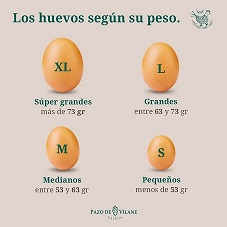
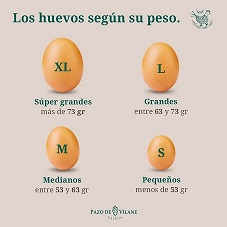

Webos_por_peso
-Súper grandes (XL): más de 73 gr
-Grandes (L): entre 63 y 73 gr
-Medianos (M): entre 53 y 63 gr
-Pequeños (S): menos de 53 gr
-Súper grandes (XL): más de 73 gr
-Grandes (L): entre 63 y 73 gr
-Medianos (M): entre 53 y 63 gr
-Pequeños (S): menos de 53 gr
Lo que tienes que hacer es coger el huevo colocando los dedos pulgar e índice en uno de los lados del ecuador, y los dedos medio y anular en el otro lado del ecuador. A continuación, dale un golpe seco en el área débil de la mitad y acto seguido empuja la cáscara hacia cada lado con los dedos pulgar y medio.